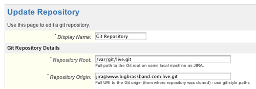
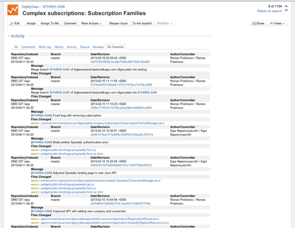
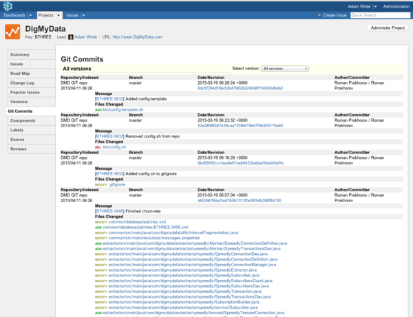
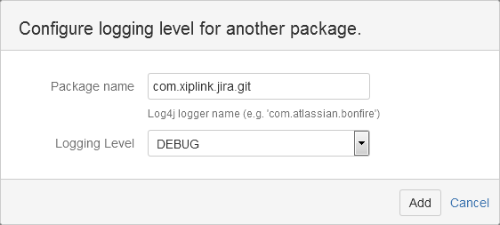
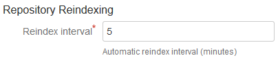
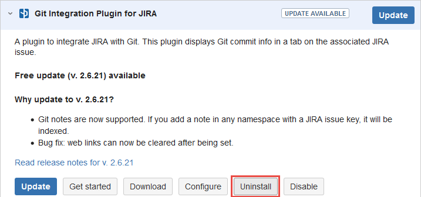
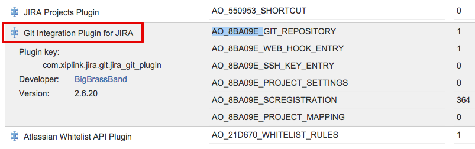

Frequently Asked Questions
Answers to questions frequently asked by Git Integration Plugin for JIRA add-on users to help you get up and running. Click a section tab to view related topics. Click a topic to view its contents.
Git is a source code repository. Developers keep track of their source code using Git.
Git relies heavily on branching and merging. Branching is making a temporary copy of source code for a single purpose like adding a particular feature or fixing a bug. Merging is safely moving the changes from one branch back to another.
This is an add-on for JIRA that mashes together data from a Git server with your JIRA server. It let's people see code in Git in context with JIRA issues.
Git can be complicated and daunting — especially for non-developers. JIRA users want this add-on so they can work with Git in the familiar JIRA interface.
In organizations with Git and JIRA, it is common to have a branch for each JIRA issue and branches for every version.
When developers put their work in Git, they can include a JIRA issue ID in the comments. With the Git Integration Plugin for JIRA installed, JIRA will then show the changes in the issue.
It is a safe and well tested plugin.
We test this on huge Git repositories in large JIRA instances. Over 100 organizations in 23 countries use the Git Integration Plugin for JIRA add-on.
On every Git commit, make sure the message includes the exact issue ID at the beginning of the text. Git Integration Plugin for JIRA will automatically index new commits and associate the referenced issue.
To create a link between your Git commit and a JIRA issue, developers must include the issue key into the commit comment.
GIT-913 - Plugin version change from 2.6.7 to 2.6.8"; where
GIT-913 is the issue key that links the commit message to the JIRA issue.
If you want to enforce the commit with a hook, please install this
Git commit hook script  .
.
Open the project summary in your browser and click on the Git Commits tab.
From "Select Version" drop-down, make sure that "All versions" is selected.
All changes that developers have submitted will be listed in reverse chronologically order. From this view, you can audit all of the changes that developers have recently submitted.
No. With Atlassian Marketplace, you can install the add-on from inside of your JIRA server using your browser. You don't have to go to the server command line to copy files or configure XML files.
For the most common setups, the URL to your Git server and credentials to access it. Tell your Git administrator that you need access to the Git repository just like a regular developer would have. They will provide what you need.
A new tab is added in each issue.
A new tab is added in each project.
Atlassian has posted the following relevant information regarding Atlassian Marketplace addons and development licenses of JIRA:
https://www.atlassian.com/licensing/marketplace#licensingandpricing-4
Which points to:
Licensing and Paid via Atlassian Listings
Go to the section titled, "Can customers use developer licenses for my add-on?", which has instructions on how to get a developer license for add-ons.
A developer license can be generated (free of charge) once the plugin has been purchased and can only be installed on a development licensed version of JIRA.
With the Git Viewer add-on for JIRA, you only define a single ID for the JIRA server. JIRA then lets authorized JIRA users browse Git.
Please visit add-on config and check Git Repositories tab. Also upgrade of JIRA may lead to changing of user account used to run service, which in turn, may result in lack of permissions.
- Change current directory to the folder where repository is located.
- Run
pwd. - Response should go to repository root field.
- Run
git remote show origin. - Find origin url in command response.
- Set this value for repository origin field.
The local repository is updated by the plugin (every time when
GitRevisionIndexerJob runs).
You can adjust the update frequency by setting the 'delay' for this process on 'Service' tab via JIRA Administration.
The Repository Root (in settings) must be a local path for server which is used to run JIRA.
In other words, the plugin must point to a clone of the repository and this clone must run locally with JIRA.
There are three possible ways to do this:
- Clone the repository outside of JIRA then connect to it via Connect to Git Repository > Advanced Setup.
- Clone the repository with the standard Connect to Git Repository Wizard into the JIRA home directory. Soon afterwards, move the cloned repository and update the settings on the repository.
- You could symlink the
{$JIRA_HOME}/data/git-plugindirectory to a different volume. The standard Connect to Git Repository Wizard will still write there, but the data will reside on the different volume.
There's a utility that helps GitLab users export repository settings from GitLab server. Get the JAR file and follow instructions at GitLab to TSV. Requires Git Integration Plugin for JIRA to work.
This utility will create a TSV import file which can be imported via Bulk Change feature of the Git Integration Plugin for JIRA.
How to import a TSV file generated from this utility:
![[GitLab to TSV, how to]](https://github.com/BigBrassBand/gitlab2tsv/blob/master/gitlab-jira-tsv-import.gif?raw=true)
If your JIRA and Git servers are running through a firewall, configure the firewall to allow access using the following URL schemes for git repositories:
| Protocol | Default port |
|---|---|
| ssh:// | port 22 |
| git:// | port 9418 |
| http:// | port 80 |
| https:// | port 443 |
Yes. The Git add-on definitely supports GitBlit via HTTPS authentication. Use the Connect to Git Repository wizard to connect to your repositories. Towards the end of the process, a username and password will be required for connection authentication.
Open an issue in your browser and click on the Git Commits tab.
If the tab says that no Git log entries have been found, then work has not yet started on the ticket.
See all Git commits associated with an issue in JIRA
Open an issue in your browser and click on the Git Commits tab.
Everyone listed in the "Author/Committer" column has worked on the issue.
Open an issue in your browser and click on the Git Commits tab.
All changes to source code are listed from newest to oldest. The date/time in the "Date/Revision" column on the first line is the last time changes to the issue have been submitted into Git.
Open an issue in your browser and click on the Git Commits tab.
When a developer submits a change to Git, they can type a brief message that summarizes the changes. These messages show up under the "Message" column.
The files that were changed by the developer appear in the "Files Changed" column. Click on the file links to view the actual source code that was changed.
Open the project summary in your browser and click on the Git Commits tab.
All changes in all issues will be present. If you use the "Version" tagging feature of JIRA, you can filter the changes by version.
See all Git commits associated with a version tag in JIRA
Passphrases are now supported since v2.x.x of the Git Integration Plugin for JIRA add-on.
SSH keys should be in .ssh folder located in user home (user which is used to run jira). Note that JIRA 5 is using 'jira' user for run by default.
Watch how to add an SSH Git repository.
The PRIVATE KEY is needed by the SSH client, which is the JIRA server, to connect to the Git server via SSH.
Configure SSH remote git repositories with Connect to Git Repository wizard as you would with any remove git repository.
- Go to Administration > Add-ons.
- On the sidebar, under Git Integration Plugin for JIRA section, select Git Repositories.
- Click Connect to Git Repository. The Connect to Git Repository wizard appears.
- Enter Repository location of your SSH git server. Click Next.
- Upload the private key or paste it on the provided field. Click Next.
- Enter Passphrase (if required). Click Next. The wizard will start cloning the selected repository. When the process is complete, the Permissions dialog is displayed.
- Click Next.
- Click Finish to complete the setup. The repository is added to the repositories list.
Here's a video to guide you step-by-step as stated above:
Watch how to add an SSH Git repository.
The debug logging level can be set by performing the following steps:
- Go to Administration > System.
- On the sidebar, under Troubleshooting and Support, select Logging & Profiling.
- Scroll down to the Default Loggers section, then click Configure. The following screen will appear:
- Enter
com.xiplink.jira.gitfor Package Name then set Logging Level to DEBUG. - Click Add to add this configuration to the Debug Loggers list.

The Git plugin — like most plugins — writes to the standard JIRA log. The setting you've enabled here, causes it to write more log data.
The Git logging is in with the standard JIRA log. This can change based on how JIRA was installed, which version you have, and which version you started with. Generally, start by looking at catalina.out in the JIRA Tomcat directory.
If you need to troubleshoot the installation of the Git Integration Plugin for JIRA (or any JIRA issue) the best place to turn to or check is the logs that JIRA offers.
Please follow the directions from Atlassian: Atlassian Logging and Profiling and send us the following file:
atlassian-jira.log (if Windows)
catalina.out (if Linux)
Re-index does 2 operations:
- Updates local repo from remote
- Updates local indexes which contain info about every commit
In terms of kicking off the indexing based on an event, you have two options:
- Reindex API: http://bigbrassband.com/api-doc.html#reindex
- Webhook: http://bigbrassband.com/documentation.html#gitctrlvwr_webhook
What other customers have done is set a high interval and then configure one of those options.
Commits won't appear immediately since synchronization is implemented as background job (GitRevisionIndexerJob). You can reduce the job delay down to 1 minute to schedule updates more often.
You can also configure this setting via JIRA Administration > Add-ons > Git Integration Plugin for JIRA > General page:
If you think that the Git indexes are corrupt and needed to be completely rebuilt, please do the following:
- Disable the Git Integration Plugin for JIRA add-on.
- Remove the following folders:
- Enable Git Integration Plugin for JIRA add-on. The git add-on will create the above folders again.
{JIRA_HOME}/cache/indexes/plugins/jira-git-files{JIRA_HOME}/cache/indexes/plugins/jira-git-revisions
If you think that the Git caches are corrupt and needed to be removed, please do the following:
- Disable the Git Integration Plugin for JIRA add-on.
- Go to
<jira_home>. - Delete the index:
- Delete the cache:
- Enable the Git add-on.
- Reindex all repositories: Go to
rm -rf <jira_home>/caches/indexes/plugins/jira-git-*
rm <jira_home>/data/git-plugin/indexed-revisions-info-cache
Administration > Add-ons > Sidebar: Manage Add-ons >
Git Integration Plugin for JIRA: Git Repositories. Click
Reindex All.
Commit information that are not shown for commits having issue key(s) in its message that were already indexed .
No. The Git Integration Plugin for JIRA add-on is designed to do a full index.
Yes – the following url can be used:
http://<server url>/secure/StartReindexGitRepositories.jspa?reindex=true
Perform a Reset + Reindex of the selected repository via Git Repositories of the Git add-on. If the issue still persist, see topic, How do I clear the Git Integration Plugin for JIRA cache manually?
- Remove any repositories from Git Integration Plugin for JIRA add-on config.
- Stop JIRA, remove the old Git Integration Plugin for JIRA add-on.
- Start JIRA, remove the Git Integration Plugin for JIRA indexing service.
- Stop JIRA, remove old lucene indexes:
- Install Git Integration Plugin for JIRA add-on, start JIRA, verify that plugin is enabled.
- Add repositories to plugin config.
- Verify that each JIRA ticket has 'Git Commits' tab
- Tab may have a note: 'There are no git log entries for this issue yet'.
- If you see the note, wait until revision indexer job populates the 'Git Commits' tab.
(/var/jira/home/caches/indexes/plugins/jira-git-revisions)
The following steps will remove the Git Integration Plugin for JIRA add-on and delete its data from JIRA:
- Uninstall the Git Integration Plugin for JIRA add-on from the
JIRA UPM (Universal Plugin Manager).
Go toJIRA Administration > Add-ons > Manage add-ons. Under User-installed add-ons, select Git Integration Plugin for JIRA then click Uninstall.

- Delete all repositories:
- Delete the index:
- Remove the Git Integration Plugin for JIRA add-on tables (all tables
starting with
AO_8BA09E_) from the JIRA database.
Credentials are usually located in - Remove the table by performing the following SQL command:
DROP TABLE table_name.
rm -rf $JIRA_HOME/data/git-plugin
rm -rf $JIRA_HOME/caches/indexes/plugins/jira-git-*
$JIRA_HOME/dbconfig.xml. There
is no standard SQL command to remove all tables by prefix. The list
of tables depends on the installed Git Integration Plugin for JIRA add-on
version. All the tables
are displayed in JIRA Administration > System > Plugin Data Storage.

GitRevisionIndexerJob is the correct one. Keep that job.
Git Revision Indexing Service is an old job and should be removed.
Starting v2.6.25 of the Git Integration Plugin for JIRA add-on, unicode characters are now supported and displayed properly.
The Git Integration Plugin for JIRA v2.5.23 add-on requires Atlassian JIRA 5.2 up to 6.3.15.
Starting from Git Integration Plugin for JIRA v2.6.0, Atlassian JIRA 6.0 or later is required. Support for Atlassian JIRA 7.0 starts with Git Integration Plugin for JIRA v2.6.24.
Buy the Git Integration Plugin for JIRA add-on on Atlassian Marketplace using your Atlassian account — the same place where you manage your JIRA license today.
Atlassian Marketplace accepts MasterCard, Visa and American Express. You may also pay with bank transfer or mailed check.